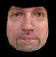

Abstract
What would you look like without a beard? Or how about with a different type of beard? Think of the beards as a layer on top of the face rather than part of the face itself. Using techniques developed by Nguyen, Lalonde, Efros, and De la Torre, the beard layer can be automatically removed by estimating a beardless face from a database of beardless faces. To refine the image synthesis, you can then using the differences between the original and synthesized images to define a beard layer mask. To examine less drastic measures, we extended the paper's techniques to include "style filters" which leave part of the beard intact by masking only parts of the beard layer. Some applications of this technique include helping match pictures of wanted persons who may have changed their appearance or helping men choose a facial hair style that fits their personality.
This project is based off of the paper "Image-based Shaving" by Nguyen, Lalonde, Efros, and De la Torre with some modifications. All code is original and was done in Matlab.
Results:
Source vs. Naive vs. Robust

Style Filtering (with Naive Algorithm)
(Clean, Moustache, Goatee, Vandyck, Fu Manchu, Soul Patch)


Style Filtering (with Robust Algorithm)
(Clean, Moustache, Goatee, Vandyck, Fu Manchu, Soul Patch)